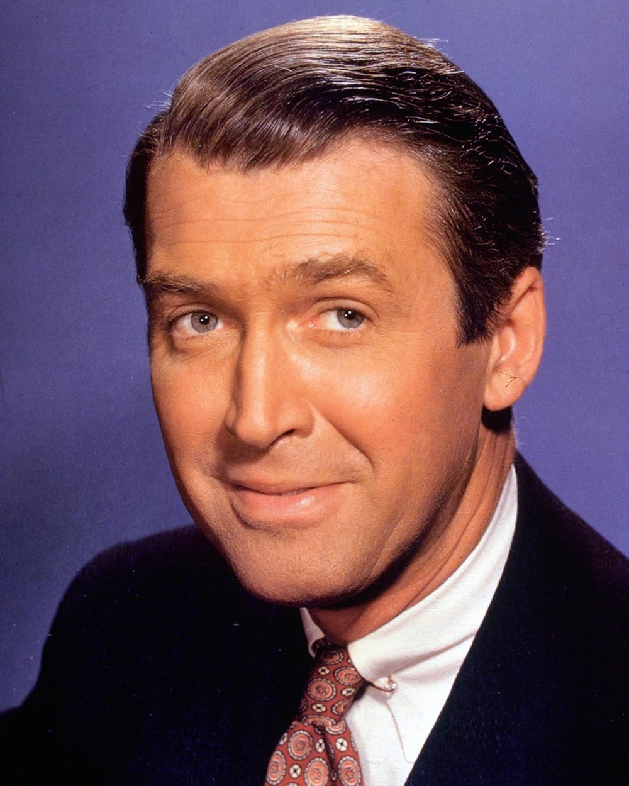
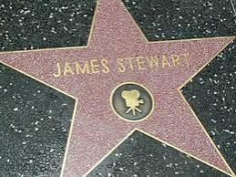
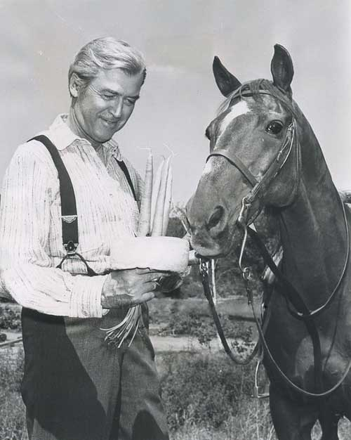
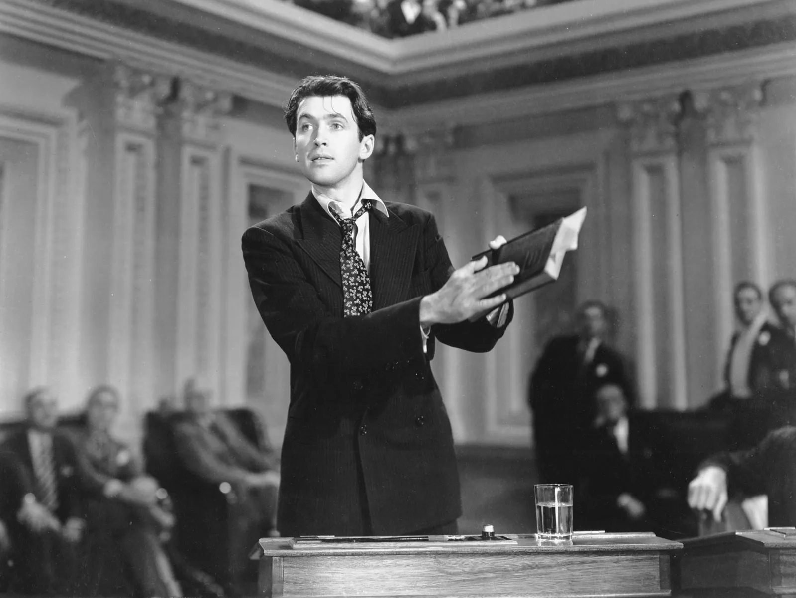
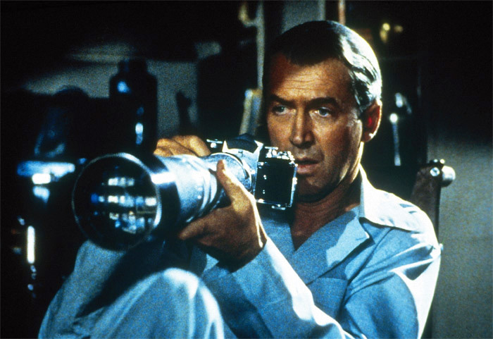
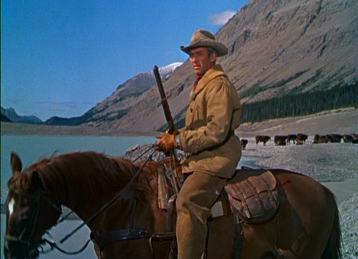
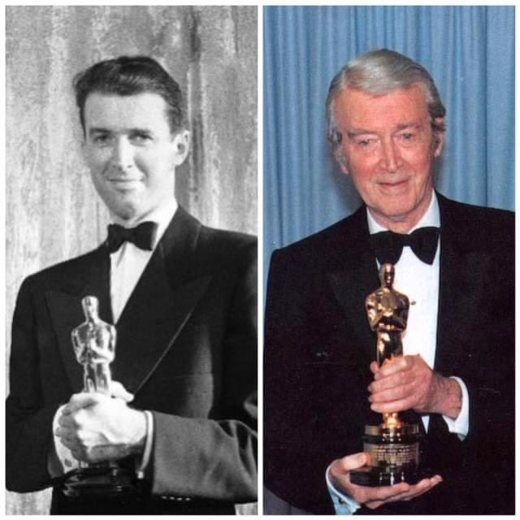
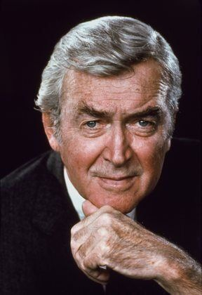

About Jimmy Stewart
An American original
James Maitland Stewart became one of the most recognizable and beloved actors of Hollywood’s Golden Age. His screen characters could be idealistic, gentle, funny, frightened, angry, obsessive, or deeply wounded—but they nearly always felt human.

From Indiana, Pennsylvania, to Hollywood
James Maitland Stewart was born on May 20, 1908, in Indiana, Pennsylvania. He grew up with his parents, Alexander and Elizabeth Stewart, and his sisters, Virginia and Mary. His father operated the family hardware store, and Stewart’s small-town upbringing remained an important part of his public identity throughout his life.
Stewart attended Mercersburg Academy before studying architecture at Princeton University. After graduating, he became involved in summer theater and eventually followed friends to New York, where he began appearing on Broadway.
MGM signed Stewart to a film contract in 1935. His natural speaking style, lanky appearance, hesitant delivery, and ability to suggest both decency and inner conflict helped him stand apart from other leading men.
During the late 1930s and early 1940s, Stewart became a major star through movies such as You Can’t Take It with You, Mr. Smith Goes to Washington, The Shop Around the Corner, and The Philadelphia Story.
At a glance
Jimmy Stewart facts

1708 Vine StreetMotion Pictures star dedicated February 8, 1960.
Hollywood career
More than the ordinary American hero
Stewart first became famous playing sincere, idealistic young men. Jefferson Smith and George Bailey remain two of the clearest examples, but his career became much darker and more complicated after World War II.
In the 1950s, Stewart worked repeatedly with director Anthony Mann on westerns that revealed anger, trauma, greed, vengeance, and moral uncertainty beneath his familiar everyman image.
His films with Alfred Hitchcock took that transformation even further. In Rear Window, The Man Who Knew Too Much, and Vertigo, Stewart played men whose fear, curiosity, possessiveness, and obsession could place both themselves and others in danger.
He also worked with directors including Frank Capra, Ernst Lubitsch, George Cukor, Cecil B. DeMille, Billy Wilder, Otto Preminger, and John Ford.
Idealists and romantics
Comedies, romances, political dramas, and ordinary men trying to hold onto their principles.
Westerns and thrillers
Darker heroes shaped by grief, revenge, suspicion, fear, and obsession.
Established legend
Later westerns, family films, television work, and recognition as one of Hollywood’s defining actors.

A special western partnership
Jimmy Stewart and Pie
One of Jimmy Stewart’s most memorable western co-stars was not another actor, but a horse named Pie.
Stewart first worked with Pie while making Winchester ’73. The two developed a strong partnership, and Pie continued appearing with Stewart throughout much of his western-film career.
Stewart believed Pie understood what was required during a scene. Their familiarity helped difficult riding moments look natural, making Pie an important part of Stewart’s western screen image.
Stewart’s close friend Henry Fonda later painted a watercolor portrait of Pie as a gift. It became a personal tribute to the horse who had shared so many western adventures with him.
World War II
Service before stardom
Stewart did not simply appear in military publicity films. He became a trained bomber pilot, commanded a squadron, flew combat missions over Europe, and continued serving long after the war ended.
Entered the Army
Stewart entered the United States Army as an enlisted man and was assigned to the Army Air Corps. He already had extensive civilian flying experience and later earned his military pilot wings and an officer’s commission.
Pilot and instructor
He trained and instructed other airmen in several aircraft, including the B-17 bomber, before receiving an overseas combat assignment.
Squadron commander
Stewart traveled to England as commanding officer of the 703rd Bomb Squadron, which operated B-24 Liberator bombers.
Combat operations
He flew 20 combat missions during World War II. He later served as operations officer of the 453rd Bomb Group and as chief of staff of the 2nd Combat Wing.
Brigadier general
Stewart continued serving in the United States Air Force Reserve after the war and was promoted to brigadier general.
Military retirement
He retired from the Air Force Reserve after more than 27 years of military service.

Military honors
Selected decorations
Distinguished Service Medal
Distinguished Flying Cross with Oak Leaf Cluster
Air Medal with three Oak Leaf Clusters
Army Commendation Medal
Presidential Unit Citation
French Croix de Guerre with Palm
Recognition
Awards and honors
Stewart received major honors for individual performances, his entire acting career, his public service, and his military service.
Academy Award for Best Actor
Stewart won Best Actor for his performance as Macaulay “Mike” Connor in The Philadelphia Story.
Competitive Oscar nominations
His nominated performances included Mr. Smith Goes to Washington, The Philadelphia Story, It’s a Wonderful Life, Harvey, and Anatomy of a Murder.
Cecil B. DeMille Award
The Golden Globes honored Stewart for his outstanding contributions to entertainment.
AFI Life Achievement Award
The American Film Institute recognized the range, influence, and lasting importance of his work.
Honorary Academy Award
The Academy honored Stewart for 50 years of memorable performances and his ideals both on and off screen.
Presidential Medal of Freedom
Stewart received the United States’ highest civilian honor in recognition of his career and public service.
My viewing project
More than a filmography
This site tracks every Jimmy Stewart movie I have watched, the character he played, who directed it, what kind of movie it is, and my personal rating.
Click any movie in the list to read a spoiler-filled description of Stewart’s character. As I continue through his career, I will add more films, personal reviews, rankings, favorite scenes, and photographs.
The watchlist
Movies I’ve watched
Showing all 26 films
| Year | Movie | Jimmy Stewart as | Director | Primary genre | My rating |
|---|
No films match those filters.
The sincere idealist
Jeff Smith, George Bailey, Tony Kirby, and Ranse Stoddard believe that decency can make a difference.
The troubled man
Scottie Ferguson, Howard Kemp, Lin McAdam, and Will Lockhart reveal Stewart’s darker and more wounded side.
The charming eccentric
Elwood P. Dowd, Theodore Honey, and Mike Connor show Stewart’s warmth, humor, and unusual screen personality.
Photo archive
Jimmy Stewart Gallery
A collection of photographs representing Jimmy Stewart’s early career, military service, Hitchcock films, westerns, awards, and later life.






Built by Ace
A fan’s view of a legendary career
This is an independent fan project created to document my Jimmy Stewart viewing journey and celebrate his life, acting career, and military service.
It is not affiliated with Jimmy Stewart’s estate, the Jimmy Stewart Museum, any film studio, or any rights holder.
Research
Main Information Sources
Biographical, military, and awards information on this page was checked against material from the Jimmy Stewart Museum, the National Museum of the United States Air Force, the Academy of Motion Picture Arts and Sciences, and the American Film Institute.